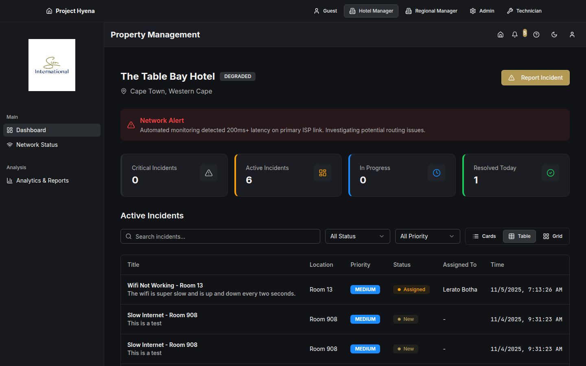
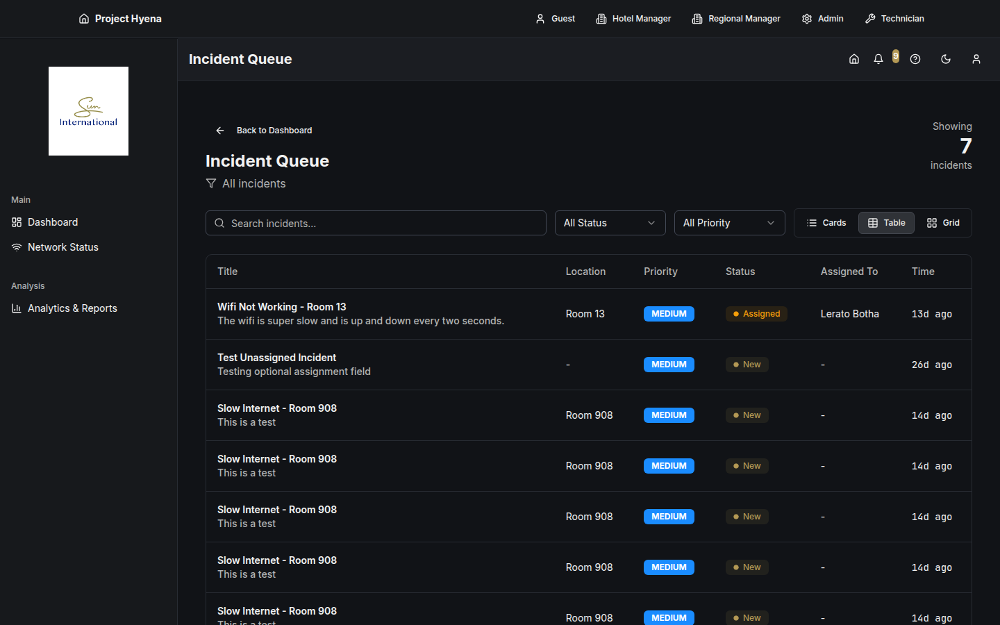
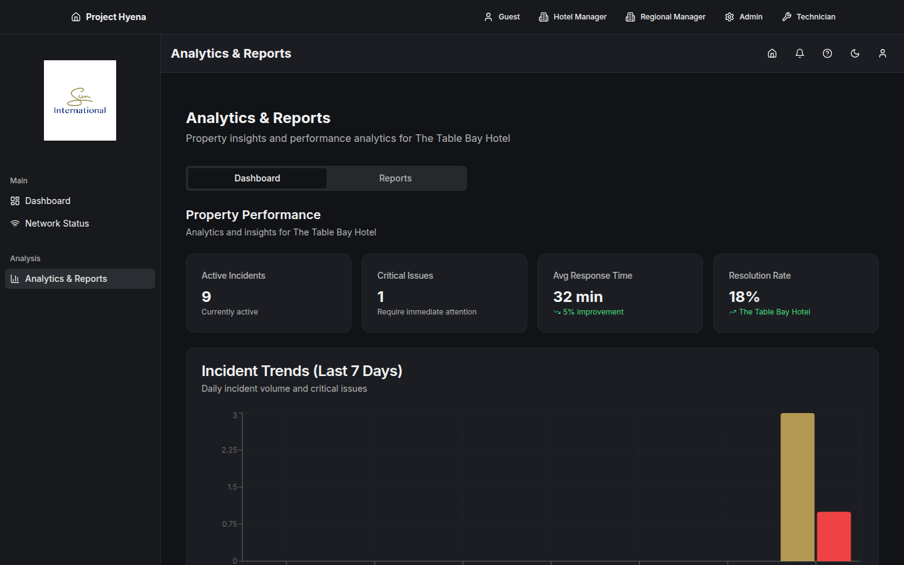

Executive Summary
The Hotel Manager Dashboard is a white-labeled operational command center designed for property managers to monitor, manage, and resolve connectivity incidents at their hotel. This interface provides real-time visibility into network health, incident status, and resolution progress, enabling managers to maintain exceptional guest experience while optimizing technician resources.
Business Value
By centralizing incident management and providing actionable analytics, hotel managers can proactively address connectivity issues before they escalate, reduce guest complaints, and make data-driven decisions about network infrastructure investments. The dashboard transforms reactive firefighting into strategic operational management.
Core Functionality
1. Dashboard Overview
The main dashboard provides at-a-glance visibility into current property network health and incident status through interactive summary metrics.
- Active Incidents Counter: Real-time count of all open incidents requiring action
- Critical Issues Alert: Highlighted counter showing high-priority incidents demanding immediate attention
- Average Response Time: Property-level metric tracking time from incident report to technician assignment
- Resolution Rate: Percentage of incidents resolved within target SLA timeframes
- Interactive Metrics: Click any summary card to filter incident queue to that specific category
- 7-Day Trend Analysis: Visual graph showing incident volume patterns over the past week

Hotel Manager Dashboard Overview - Summary metrics cards showing Active Incidents, Critical Issues, Avg Response Time, Resolution Rate
2. Incident Queue Management
Comprehensive incident listing with powerful filtering, sorting, and bulk action capabilities for efficient incident triage and assignment.
- Multi-Dimensional Filtering: Filter by status (New, Assigned, In Progress, On Hold, Resolved), priority (Critical, High, Medium, Low), category
- Real-Time Status: Live updates as incidents are created, assigned, updated, or resolved
- Priority-Based Sorting: Automatic highlighting of critical and high-priority incidents
- Quick Actions: One-click access to assign technician, change priority, or view full incident details
- Bulk Operations: Select multiple incidents for batch assignment or priority updates
- Search & Filter: Quickly locate specific incidents by guest name, room number, or issue description

Incident Queue View - Filtered list of incidents with status badges, priority indicators, and action buttons
3. Incident Detail & Action Management
Detailed incident view providing complete context and comprehensive action options for effective incident resolution.
- Complete Incident Context: Guest information, room location, issue description, category, priority, timestamps
- Activity Timeline: Chronological log of all actions taken, status changes, and technician updates with comments
- Technician Assignment: Assign initial technician or reassign to different team member
- Priority Management: Escalate or de-escalate incident priority based on changing circumstances
- Status Actions:
- Put On Hold - Temporarily suspend work with resume date and reason
- Request Information - Ask guest for additional details
- Mark as Resolved - Close completed incidents
- Cancel Incident - Close false reports or duplicates
- Comment System: Add internal notes and updates to incident timeline for team collaboration
Incident Detail Panel - Side panel showing incident details, timeline, and action buttons
4. Analytics & Reporting
Property-specific performance metrics and trend analysis to support data-driven operational decisions.
- 7-Day Incident Trends: Line chart showing daily incident volume to identify patterns
- Category Breakdown: Distribution of incidents by type (WiFi, Streaming, Device Connectivity) to identify problem areas
- Performance KPIs: Average resolution time, first-time fix rate, technician utilization
- Property-Specific Focus: All metrics scoped to single property for focused management

Analytics View - Charts showing incident trends and category breakdown
5. Network Status Awareness
Real-time visibility into external factors affecting network performance, particularly critical for South African context.
- Load Shedding Alerts: Integration with Eskom API to display current and upcoming load shedding schedules
- ISP Status: Alerts for known ISP outages or degradation affecting property connectivity
- Weather Impact: Severe weather warnings that may impact network infrastructure
- Proactive Communication: Pre-emptive guest notifications about anticipated service disruptions
User Workflows
Workflow 1: Morning Operational Review
1
Login to Dashboard
Manager accesses Hotel Manager Dashboard at start of shift
2
Review Summary Metrics
Check overnight incident volume, critical issues, resolution performance
3
Address Critical Items
Click "Critical Issues" card to view high-priority incidents needing immediate attention
4
Assign Resources
Assign technicians to unassigned critical incidents based on availability and expertise
5
Check External Factors
Review load shedding schedule and ISP status for potential impact planning
6
Review Trends
Analyze 7-day trend graph to identify emerging patterns or recurring issues
Workflow 2: Responding to New Critical Incident
1
Real-Time Alert
Dashboard notification counter updates with new critical incident
2
View Incident Details
Click incident in queue to open detail panel with full context
3
Assess Situation
Review guest information, issue description, affected room/area, impact scope
4
Assign Technician
Open "Assign Technician" dialog, select appropriate technician based on location/expertise
5
Add Context Note
Use comment system to add internal note with priority instructions or guest sensitivities
6
Monitor Progress
Watch activity timeline for technician updates and status changes
Workflow 3: Incident Escalation Management
1
Identify Stalled Incident
Notice incident has been "In Progress" for extended period without resolution
2
Review Timeline
Check activity log to understand what troubleshooting has been attempted
3
Change Priority
Use "Change Priority" action to escalate from Medium to High or Critical
4
Reassign or Add Resources
Either reassign to senior technician or request additional help via comment
5
Guest Communication
Add "Request Information" update if need guest input, or proactively communicate status
Technical Features
White-Label Branding
Dashboard automatically displays organization-specific branding while maintaining consistent functionality across all branded instances.
- Organization logo in navigation header
- Custom color schemes matching brand guidelines
- Property-specific context (name, location, contact info)
- Branded export and print-friendly reports
Real-Time Data Synchronization
All incident data updates automatically across all connected dashboards without manual refresh, ensuring managers always have current information.
Role-Based Access Control
Property managers see only their assigned property's incidents and analytics, ensuring data isolation in multi-property organizations.
Comment & Collaboration System
New comment functionality allows managers to add internal notes to incident timelines for team collaboration and context preservation.
- Timeline integration showing all comments chronologically
- Actor attribution (who posted each comment)
- Timestamp tracking for audit trail
- Markdown support for formatted notes
AI Transformation Opportunities
Artificial intelligence can transform the Hotel Manager Dashboard from a reactive monitoring tool into a proactive operational intelligence platform that predicts problems, automates routine decisions, and provides strategic insights.
1. Intelligent Incident Triage & Auto-Assignment
Current State: Manager manually reviews each new incident and assigns technician based on personal knowledge.
AI-Enhanced Future: System automatically categorizes, prioritizes, and assigns incidents to optimal technician.
- Smart Categorization: NLP analyzes guest description to automatically tag incident category and affected systems
- Dynamic Priority Adjustment: ML considers guest tier (VIP/loyalty status), issue type, property occupancy, time of day to set optimal priority
- Intelligent Assignment: AI matches incidents to technicians based on:
- Current workload and availability
- Historical expertise with similar issue types
- Physical proximity to affected room
- Past guest interaction success ratings
- Workload Balancing: Prevents technician burnout by distributing work evenly across team
- Override Capability: Manager retains ability to manually reassign if AI suggestion doesn't fit situational context
Business Impact Example
At 3 PM on a Friday, five incidents are reported simultaneously. AI instantly categorizes each, identifies that two are in the same wing and can be handled by one trip, assigns the VIP guest issue to the most experienced technician, and routes the simple TV streaming issue to available junior tech—all before the manager even sees the alerts.
2. Predictive Analytics & Trend Forecasting
Current State: Dashboard shows historical 7-day trends; manager interprets patterns manually.
AI-Enhanced Future: System predicts future incident volumes and identifies emerging problems before they become critical.
- Volume Forecasting: ML predicts incident levels for next 24-72 hours based on:
- Historical patterns (weekday vs. weekend, seasonal variations)
- Property occupancy forecast
- Scheduled events (conferences, weddings, peak check-in times)
- External factors (weather, load shedding schedules)
- Anomaly Detection: AI alerts manager when incident rates deviate from expected patterns ("Unusual spike in WiFi issues in East Wing—possible access point failure")
- Root Cause Correlation: System identifies common factors across multiple incidents to reveal underlying infrastructure problems
- Seasonal Pattern Recognition: Learns multi-year patterns like "December holiday period sees 40% more streaming issues"
- Actionable Recommendations: "Based on forecast, consider scheduling additional technician coverage for Saturday afternoon"
3. Automated Status Updates & Guest Communication
Current State: Manager manually reviews incidents and decides when to update guests.
AI-Enhanced Future: System automatically generates and sends appropriate guest updates based on incident progress.
- Smart Triggers: AI determines optimal times to communicate with guests (technician assigned, significant delay, issue resolved)
- Message Personalization: Generates guest-friendly updates tailored to incident severity and guest preferences
- Multi-Channel Delivery: Chooses optimal channel (SMS, email, in-app notification) based on guest profile
- Sentiment-Aware Tone: Adjusts communication style for frustrated guests vs. routine issues
- Proactive Apologies: Automatically offers compensation (meal voucher, late checkout) for critical delays based on established thresholds
4. Intelligent Dashboard Insights & Recommendations
Current State: Dashboard displays raw metrics; manager must interpret and decide actions.
AI-Enhanced Future: AI Assistant proactively surfaces insights and suggests specific operational actions.
- Contextual Insights: "Critical incidents are up 60% this week—this correlates with load shedding in Sandton area"
- Performance Comparisons: "Your average resolution time is 15% better than other Protea properties this month"
- Proactive Alerts: "Room 305's WiFi has degraded 40% in past 2 hours—likely to generate guest complaint within next 30 minutes"
- Action Recommendations: "Consider pre-emptive technician dispatch to prevent complaint"
- Resource Optimization: "Your PM shift consistently has 3x more incidents than AM—recommend shifting one technician's schedule"
- Investment Guidance: "East Wing generates 70% of WiFi issues—ROI analysis suggests replacing access points would reduce incidents by 45%"
5. Predictive Maintenance Scheduling
Current State: Reactive response to reported failures; no proactive infrastructure maintenance.
AI-Enhanced Future: System predicts equipment failures and schedules preventive maintenance before guest impact.
- Equipment Health Monitoring: AI tracks access point performance, signal degradation, connection drop rates
- Failure Prediction: ML models predict "Access Point 3-East likely to fail within 7 days based on performance trends"
- Optimal Scheduling: Recommends maintenance during low-occupancy periods to minimize guest disruption
- Parts Inventory Management: Predicts which replacement parts will be needed and when
- Vendor Coordination: Automatically generates service requests for external ISP or infrastructure vendors
6. Natural Language Query Interface
Current State: Manager manually filters and sorts data to answer questions.
AI-Enhanced Future: Manager asks questions in plain English; AI provides instant answers with supporting data.
- Conversational Queries: "How many WiFi issues did we have last weekend?" → Instant chart and number
- Comparative Analysis: "Is this week worse than usual?" → AI compares to historical averages with statistical significance
- Root Cause Exploration: "Why are incidents increasing?" → AI provides multi-factor analysis
- Performance Questions: "Which technician resolves WiFi issues fastest?" → Ranked performance metrics
- Predictive Queries: "What should I expect tomorrow?" → Forecast with confidence intervals
- Report Generation: "Create executive summary for weekly management meeting" → Formatted report with key insights
7. Automated Incident Clustering & Pattern Recognition
Current State: Multiple related incidents treated as separate issues.
AI-Enhanced Future: AI identifies related incidents and reveals systemic problems requiring single fix.
- Spatial Clustering: "Five WiFi issues in Rooms 301-308 in past hour → likely single access point failure"
- Temporal Patterns: "Streaming issues spike every evening 7-9 PM → bandwidth capacity problem"
- Category Correlation: "Guest reporting WiFi + TV streaming issues → likely ISP upstream problem, not property network"
- Automatic Grouping: System proposes merging related incidents or creating master ticket for systemic issue
- Impact Assessment: "This access point failure affects 24 rooms—recommend critical priority escalation"
8. Dynamic SLA & Resolution Target Management
Current State: Fixed resolution targets regardless of incident complexity or context.
AI-Enhanced Future: AI sets realistic, dynamic resolution targets based on incident specifics.
- Complexity Assessment: AI estimates resolution time based on issue type, historical similar incidents, technician skill level
- Contextual Targets: Adjusts expectations for unusual incidents (severe weather, vendor dependency, supply chain delays)
- Guest Impact Weighting: Tighter SLAs for VIP guests or high-occupancy periods
- Proactive Escalation: Automatically escalates if incident risks missing dynamic SLA target
- Realistic Expectations: Communicates AI-generated ETA to guests instead of generic promises
Implementation Roadmap
| Phase |
AI Capability |
Business Value |
Technical Requirements |
Phase 1
(3-6 months) |
• Smart categorization
• Automated priority setting
• Basic trend analysis
|
• 50% reduction in manual triage time
• More consistent prioritization
• Faster incident assignment
|
• NLP API integration
• Training data from historical incidents
• ML model for priority classification
|
Phase 2
(6-12 months) |
• Intelligent auto-assignment
• Predictive analytics
• Anomaly detection
|
• Optimal technician utilization
• Proactive problem identification
• 30% faster average resolution
|
• Technician performance tracking
• Real-time workload monitoring
• Time-series forecasting models
|
Phase 3
(12-18 months) |
• AI Assistant with NL queries
• Predictive maintenance
• Automated guest communication
|
• Strategic operational insights
• 60% reduction in guest-facing failures
• Enhanced guest satisfaction
|
• Advanced ML infrastructure
• Integration with network monitoring
• Multi-channel communication platform
|
South African Contextualization
For maximum effectiveness in the South African hospitality market, AI systems should:
- Load Shedding Intelligence: ML models trained on Eskom schedules and historical impact patterns to predict connectivity issues
- ISP Reliability Patterns: Learn and compensate for known reliability issues with local ISPs (Telkom, Vodacom, MTN, Rain)
- Seasonal Tourism Patterns: Understand Cape Town summer season, Kruger safari peak periods, Durban holiday patterns
- Multi-Language Support: NLP capabilities for English, Afrikaans, Zulu for both guest communication and technician notes
- Regional Economic Factors: Adjust guest compensation recommendations based on local pricing and expectations
- POPIA Compliance: All AI processing must comply with Protection of Personal Information Act data privacy requirements
Success Metrics
Current State Metrics
| Metric |
Current Target |
Measurement Method |
| Average Response Time |
< 15 minutes |
Time from incident creation to technician assignment |
| Resolution Rate (within SLA) |
> 85% |
Percentage of incidents resolved within target timeframe |
| Critical Incident Escalation Time |
< 5 minutes |
Time from critical incident report to manager action |
| Guest Satisfaction (Resolved Issues) |
4.3+ / 5.0 |
Post-resolution survey rating |
| First-Time Fix Rate |
> 75% |
Percentage of incidents resolved on first technician visit |
AI-Enhanced Target Metrics
| Metric |
AI-Enhanced Target |
Improvement |
| Average Response Time |
< 3 minutes |
-80% via instant auto-assignment |
| Resolution Rate (within SLA) |
> 95% |
+12% via predictive maintenance |
| Proactive Issue Prevention |
40-50% |
New metric: incidents prevented before guest report |
| Manager Time on Manual Triage |
-70% |
AI handles routine categorization and assignment |
| First-Time Fix Rate |
> 90% |
+20% via AI root cause diagnosis |
| Guest Satisfaction |
4.7+ / 5.0 |
+9% from faster response and proactive communication |
Conclusion
The Hotel Manager Dashboard provides property managers with the operational visibility and control tools needed to deliver exceptional network connectivity experiences for guests. By centralizing incident management, providing real-time status updates, and enabling rapid response to critical issues, the dashboard transforms network support from a reactive pain point into a proactive competitive advantage.
The integration of AI capabilities represents a quantum leap in operational efficiency and guest satisfaction. Rather than spending time on manual triage and assignment, managers can focus on strategic oversight while AI handles routine decisions. Predictive analytics shifts the paradigm from firefighting to prevention, allowing hotels to fix problems before guests even notice them. Natural language querying and automated insights empower managers to make data-driven decisions without requiring deep technical expertise.
For South African hospitality properties facing unique challenges like load shedding and variable ISP reliability, AI-powered prediction and proactive communication become especially valuable—transforming external infrastructure problems from guest frustrations into transparently-managed service expectations.
Next Steps for AI Implementation
- Data Foundation: Begin comprehensive logging of all incident data, resolution patterns, technician performance, and guest outcomes to build training datasets
- Pilot Selection: Choose 1-2 high-volume properties for initial AI deployment to validate effectiveness and gather feedback
- Manager Training: Educate property managers on interpreting AI insights and understanding when to trust vs. override AI recommendations
- Success Metrics: Establish baseline measurements for all current metrics before AI implementation to quantify ROI
- Continuous Improvement: Implement feedback loops where manager corrections to AI decisions improve future model accuracy
Project Hyena - Network Monitoring Platform for Hospitality
Document Version 1.0 | November 2025
This document is proprietary and confidential. Unauthorized distribution is prohibited.